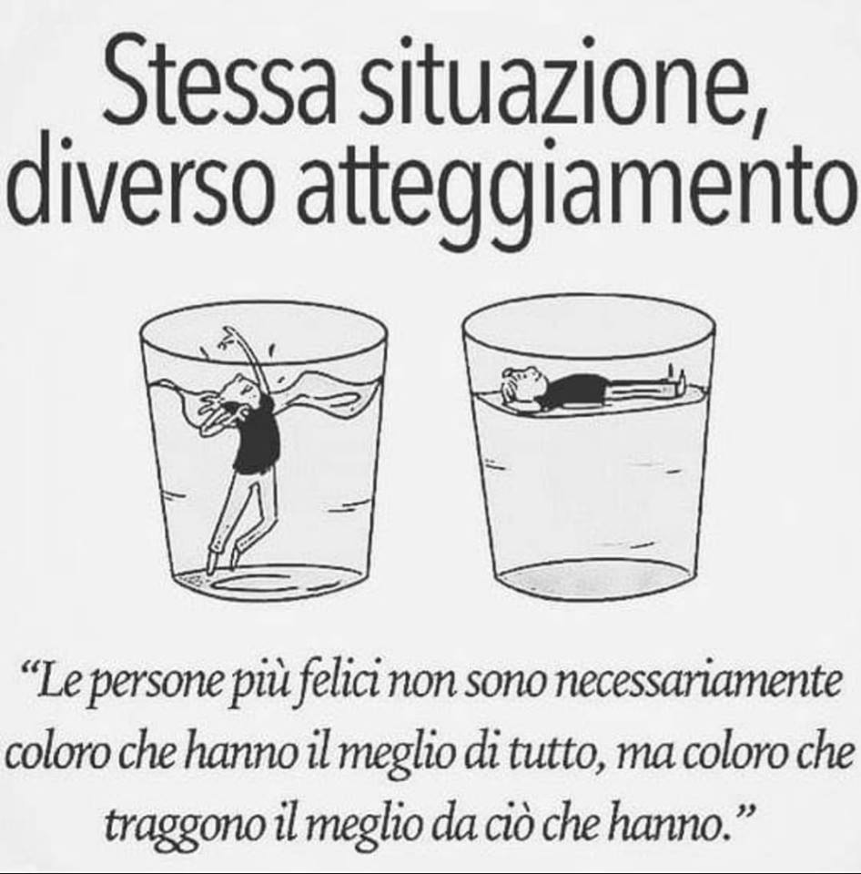

Innamorati dei due di picche perché saranno la cosa che succederà più di frequente nella tua vita.
Il rischio di fallire spaventa tutti.
O che tu stia cercando di avviare una tua attività, o che tu stia cercando di laurearti, o che tu stia cercando di realizzare te stesso, o che tu stia cercando di inquadrarti dal punto di vista lavorativo, o che tu stia cercando di conquistare una ragazza, il fallimento non manca mai.
E’ li che ti aspetta!
Molti di noi hanno paura di raccontare i propri fallimenti. La vergogna è tanta e l’autostima si abbassa e non è mai bello!
Prendere un bel due di picche può insegnare molto di più di quanto si pensi. Il punto è saper cogliere l’insegnamento cercando di vedere le cose da una prospettiva diversa dal normale.
Farlo non è facile, più che altro perché richiede una forte determinazione ed una bravura nel motivare se stessi.
È molto facile abbattersi, ed io sono il primo che lo fa, in realtà lo facciamo tutti.
Le domande sono sempre le stesse:
Rifletti un secondo: ha senso farsi queste domande? Cosa cambierebbe? Nulla!
In realtà la vera cosa da osservare sarebbe: Cosa ho imparato su di me? Cosa mi ha insegnato questa lezione?
Piangere sul latte versato non ha senso, come non ha senso porsi le domande di cui sopra.
L’unica cosa che ha senso è pensare che le cose succedono e alla fine non puoi fare tanto per evitarlo.
Inoltre molto spesso le cose succedono non per causa nostra, ma per causa altrui, e qui si hanno veramente le mani legate. Nonostante tutto è molto comune vedersi come i capi espiatori di tutto.
Vedere una situazione negativa in un modo meno tragico, diciamo più formativo e positivo, non è facile e richiede un grande sforzo e una grande apertura mentale.
Richiede un grande sforzo il cercare di cogliere gli insegnamenti che abbiamo appreso quando l’unica cosa che vorremo fare è tornare indietro e riparare tutto. Magari vorremmo tornare indietro e non fare più quella scelta.
Vorremmo tornare indietro e non comportarci più in quella maniera.
Purtroppo non si può.
La verità è che fallire ti da la possibilità di conoscere molti più aspetti di te di quanto lo possa fare l’avere successo. Se tutto nella tua vita andasse bene, al primo problema non sapresti come muoverti.
Un fallimento, una delusione, un due di picche da una ragazza, ti tempra per il futuro e ti rende molto più preparato e forte. Ti aiuta a conoscere te stesso meglio di qualunque altra cosa.
Quando hai successo in qualcosa, è molto difficile che cerchi di capire cosa potevi migliorare oppure cosa, al di là del successo, è andato male. Pensi solo a goderti l’entusiamo del momento.
Prendere consapevolezza dei propri fallimenti è un passo per cercare di capire cosa abbiamo imparato da essi. E’ un passo verso la consapevolezza che fallire è normale e che è altrettando normale che le cose non vadano come previsto.
Quello che mi capita di fare spesso è scrivere, e lo faccio anche per questo.
Scrivo le cose in cui io penso abbia fallito, riflettendo anche sugli insegnamenti ricevuti. Scrivere tutto questo mi aiuta a vedere quella particolare cosa con occhi diversi ed accorgermi che alla fine non è stato un vero e proprio fallimento.
Finisco l’articolo con un’immagine che rappresenta esattamente i due lati di una medaglia in una situazione di questo tipo.

Fallire è normale.
Rimanere delusi è normale.
Fa tutto parte della vita.
Quello che conta è da che parte stai e come vedi la realtà.
Stai dalla parte di quello che affoga oppure di quello che rimane a galla sapendo che alla fine, dopo tutto, è stato comunque un’esperienza bella e sta aspettando la prossima?
Ciao e alla prossima 😉
Written on January 18th, 2019 by Davide